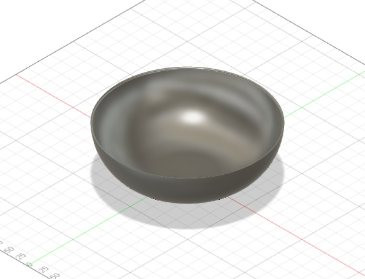
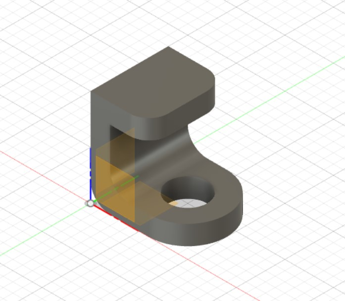
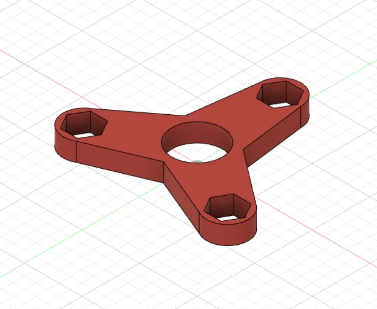
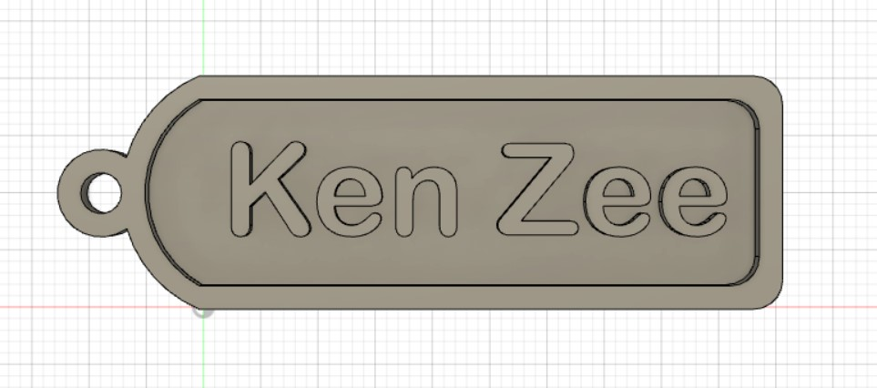
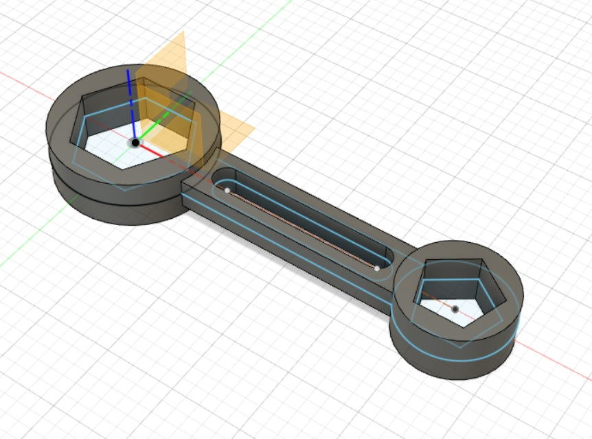
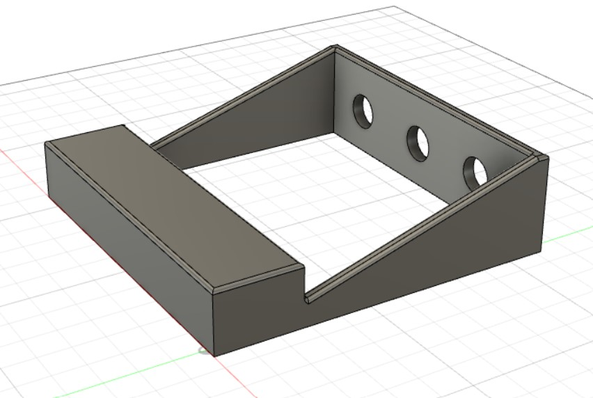

Computer aided design has 2 parts:
- Gimp
- Fusion 360 design
1.Gimp
Gimp is an image editing software that helps to edit picture,images and photographs to the users likings.
Gimp download linkAllow me to show you how to use Gimp to remove backgrounds and add yourself to the picture
Firstly,open 2 images in gimp,one of yourself,and one of your background


Next,Click the select tool and trace the outline of yourself and copy it (ctrl+c)
After,select the other picture and paste(ctrl+v) the copied image.
For more info on Gimp,go watch some youtube videos!
i recommend how to use gimp
2.Fusion 360
Fusion 360 is the only tool that connects entire product development process into a single CAD / CAM / CAE cloud-based platform.
here are some images of the projects that i have done using fusion 360
- Bowl
- simple drawing excercises
- Fidget spinner body(w/o gears)
- key tag/name tagchain
- Spanner
- Laptop stand